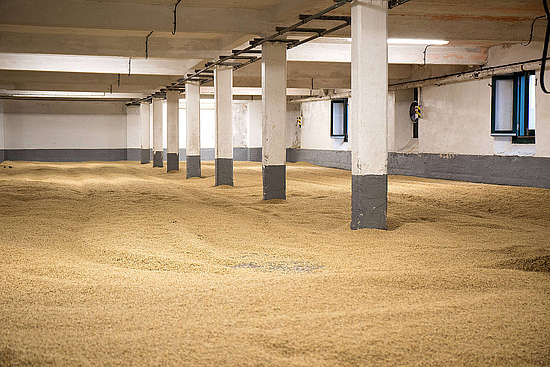

There are many types of Whisky out there. From Scotch, Irish, Single Malt and Blend to Bourbon and Rye.
Malt Whisky
Malt whisky is whisky that is made from a fermented mash consisting primarily of malted barley. If the product is made exclusively at a single distillery (along with other restrictions), it is typically called a single malt whisky. Although whisky can be made using other malted grains, they are not called malt whisky without specifying the grain, such as one made with rye being called rye malt whisky.
Grain Whisky
Grain whisky ordinarily refers to any whisky made, at least in part, from grains other than malted barley, such as whisky made using maize (corn), wheat or rye. Grain whiskies usually also contain some malted barley to provide enzymes needed for mashing, and are required to include it if produced in Ireland or Scotland. Whisky made from only malted barley is generally called malt whisky rather than grain whisky. Most American and Canadian whiskies are grain whiskies.
Blended Whisky
A blended whiskey (or blended whisky) is the product of blending different types of whiskeys and sometimes also neutral grain spirits, coloring, and flavorings. It is generally the product of mixing one or more higher-quality straight or single malt whiskies with less expensive spirits and other ingredients. This allows for a lower priced product, though expensive "premium" varieties also exist. Some examples of blended whiskey include Canadian Mist, Jameson Irish Whiskey, Seagram's Seven American whiskey, the premium Japanese brand Hibiki and the various Scotch whisky blends sold under the Johnnie Walker brand.
Single Pot Still Whiskey
Single pot still whiskey is a style of Irish whiskey made by a single distillery from a mixed mash of malted and unmalted barley distilled in a pot still. Somewhat similar to single malt whiskey, the style was defined by its inclusion of unmalted raw barley in the mash in addition to malt. However, on occasion, small amounts of raw oats or wheat may also have been used. This unmalted component is said to give single pot whiskey a "spicier bristle" and "thicker texture" than the otherwise similar single malt whiskeys. If the whiskey is not distilled totally on the site of a single distillery, then it may be termed pot still whiskey, but not single pot still whiskey.
Bourbon Whiskey
Bourbon whiskey is a type of American whiskey, a barrel-aged distilled spirit made primarily from corn. The name derives from the French Bourbon dynasty, although the precise inspiration for the whiskey's name is unsettled; contenders include Bourbon County in Kentucky and Bourbon Street in New Orleans. Bourbon has been distilled since the 18th century. The use of the term "bourbon" for the whiskey has been traced to the 1820s, and the term began to be used consistently in Kentucky in the 1870s. While bourbon may be made anywhere in the United States, it is strongly associated with the American South, and with Kentucky in particular. As of 2014, the distillers' wholesale market revenue for bourbon sold within the U.S. is about $2.7 billion, and bourbon makes up about two-thirds of the $1.6 billion of U.S. exports of distilled spirits.
Rye Whiskey
Rye whiskey can refer to either of two, different, but related, types of whiskey:
- American rye whiskey, which must be distilled from at least 51 percent rye;
- Canadian whisky, which is often referred to as (and often labelled as) rye whisky for historical reasons, although it may or may not actually include any rye in its production process.
Corn Whiskey
Corn whiskey (sometimes called corn liquor or white lightning) is an American liquor made from a mash of at least 80 percent corn and distilled to a maximum strength of 160 proof (80% alcohol by volume). Distinct from the stereotypical American moonshine, corn whiskey uses a traditional mash process and is subject to the tax and identity laws for alcohol under federal law. Several commercial distillers such as Heaven Hill produce unaged corn whiskeys for retail sale.
All images and content taken from Wikipedia
Are you ready? Start quiz!